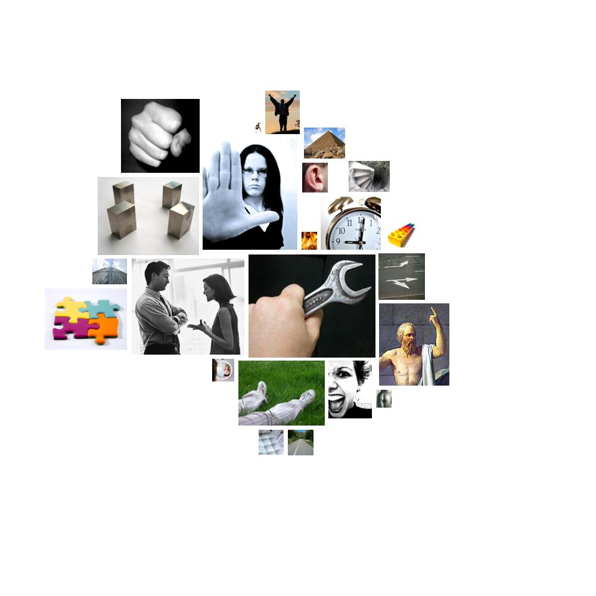

nader.txt.html
  instrumental_behavior
instrumental_behavior counting, make, students, skills, practice, use, build, records, skills, skills, skills, jobs, trade, students, making, workers, work, make, making, making, production, workers, pay, earn, make, pay, students, paying, pay, student, students, students, students, jobs, price, jobs, job, work, work, architectural, work, work, work, jobs, work, making, jobs, employees, find, cost, carrying, workers, factories, trade, risk, risked, pursuits, pursue, pursue, pursuing, pursuit, buy, labor, workers, using, products, price, workers, price, labor, sells, price, finishing, businesses, price, price, workers, making, pay, price, paying, businesses, spend, sells, workers, workers, money, workers, buy, pay, trying, trying, make, spend, workers, making, workers, workers, working, making, labor, businesses, belong, labor, making, labor, making, study, win, business, work, pick, business, trade, costs, marketplace, workers, try, costs, trade, trade, practiced, sold, selling, won, marketing, markets, produce, product, working, workers, risk, work, property, apply, apply, achieve, try, try, make, pay, selling, products, making, money, business, business, soldiers, work, founding, money, record, records, spent, money, selected, test, costs, cost, money, money, repair, money, recorded, business, working, used, try, spent, study, pay, pays, pay, pay, money, earn, marketplace, pay, factory, work, pay, count, work, earnings, gains, dividends, industries, worker, win, trying, business, copy, business, money, money, trying, industrial, costs, sold, profit, work, works, studies, record, work
 social_behavior
social_behavior declared, elections, elections, inquiry, election, informed, elections, information, conference, influence, elected, engagement, answer, engaging, social, engaging, generous, appeal, able, talk, talking, engage, talked, talk, speak, advice, saying, speak, speaking, social, declaration, persuaded, persuaded, persuaded, electoral, elections, telling, say, says, says, share, telling, said, answer, said, meet, allow, say, declaration, declare, response, visiting, say, elected, said, said, say, ask, ask, committee, committees, ask, say, talking, talking, mentioned, granted, said, told, said, speak, speak, speak, protect, protect, assistant, talk, talk, kneel, called, forgiveness, allowed, declaration, said, declaration, encouraged, said, said, said, said, said, telling, called, say, called, says, representatives, please, representative, call, answers, answers, call, inquirer, telling, callees, callers, says, say, represents, allow, discussed, able, says, answers, said, representing, representing, representing, says, allow, talking, allowed, allowed, allowed, committees, say, called, declare, informed, responsible, said, called, social, social, pleasure, education, thank
 restraint
restraint obstacles, obstructs, control, dungeon, penalty, prisoners, control, shut, taxes, police, taxes, policy, tax, prisoner, policy, taxes, shut, determine, arrest, jail, require, taxes, shut, taxes, tax, tax, authorize, control, control, controlled, control, tax, tax, tax, tax, tax, control, stop
 order
order standard, indexes, index, standard, graduate, listening, order, form, standard, system, routine, system, organized, system, stability, form, classic, standards, listen, classical, organize, system, system, dividends, system, system
 aggression
aggression army, enemies, fight, war, violations, fight, fight, fight, revolt, violence, struggle, beat, cutting, strike, cuts, opposite, wrecking, bother, oppose, war, violations, war, ridiculous, hit, stability, violence, brutal, rip, shoot, violent, war, exploited, injured, damaged, breaks, war, slaughtering, killing, gun, war, doubt, war, war, brutal, brutal, fighting, slaughtering, invade, condemned, threat, weapons, destruction, weapons, destruction, threat, brutal, army, fight, hostile, hostile, aggressive, weapons, weapons, destruction, brutal, fighting, stealing, hit, hit, bothered, abuse, complaining, complaining, damage, injured, breaking, injure, fight
 moral_imperative
moral_imperative duty, duty, virtually, rights, rights, right, right, right, should, justice, justice, rights, should, should, should, should, birthright, right, should, should, property, privileges, privileges, conscience, right, should, customers, oughta, right, right, rights, should, justice, law, should, should, should, should, responsible, principle, morality, conscience, respect
 passivity
passivity apathy, safety, security, safety, couches, decay, safety, decayed, safe, safety, static, die, deadly, deadly
 abstraction
abstraction example, why, history, cause, learning, almost, almost, information, think, why, true, purposes, learn, understanding, them, sciences, otherwise, know, them, concentration, themselves, themselves, sure, them, plan, know, perhaps, them, themselves, know, them, them, them, them, basically, know, guess, reality, history, consider, plants, know, solution, problems, chose, real, differences, them, them, know, themselves, know, analyzing, decided, them, why, know, something, why, real, history, history, rational, reason, suppose, something, them, know, know, know, problem, them, know, definition, considered, probably, analyst, analyzes, true, know, think, think, sure, history, why, them, believe, theme, plant, determine, something, them, idea, comparative, know, certain, example, comparative, know-how, know-how, purposes, sure, cause, them, them, them, deliberated, deliberative, deliberation, know, know, them, truth, selected, idea, knowledge, thought, example, know, different, them, known, know, know, real, thought, except, important, choice, why, know, considered, thinks, know, understand, supposed, fact, them, know, know, know, know, know, decide, sure, why, why, purposes, them, them, figures, know, plantations, rationale, know, history, know, them, science, belief, thought
 temporal_references
temporal_references time, while, then, when, hour, every, time, every, year, when, when, then, now, now, years, year, now, year, every, every, years, months, time, then, now, now, year, when, hours, week, when, year, old, every, then, hour, then, already, when, then, when, often, hour, when, time, now, time, today, year, while, now, minute, when, then, ever, then, years, months, again, when, when, year, years, ago, year, every, year, today, years, ago, ever, ever, now, then, when, time, soon, hour, now, hour, now, once, years, during, when, when, now, when, when, hours, ever, now, when, when, now, month, month, time, years, moments, everything, now, now, now, year, soon, ever, then, time, then, again, everything's, now, years, ago, now, often, year, now, everybody, when, when, now, now, ever, everything's, now, time, every, year, now, week, then, dated, then, when, years, year, once, times, every
 anxiety
anxiety anxiety, distress, worry, trouble, trouble, trouble
 random_movement
random_movement revolve, wave, spread, agitated, spread, activities, wave, wave
 glory
glory wealthy, greatest, greater, richest, richest, wealth, wealth, rich, richest, golden, wealthy, wonder, greatest, wondered, wealth, greatest, principle, wealth
 depth
depth low, bottom, under, lower, under, under, under
 timelessness
timelessness endless, century, century
 concreteness
concreteness western, over, out, here, at, here, at, at, at, at, here, out, where, out, along, point, out, out, over, western, east, at, south, at, places, at, at, longer, out, east, at, level, off, closing, at, between, positions, between, over, over, at, out, off, out, close, closing, at, where, overseas, opened, longer, where, back, over, backwards, out, here, flatter, flattered, flattered, flatter, at, out, behind, out, near, out, out, out, at, at, out, out, where, overtime, off, place, out, out, at, at, place, over, places, at, open, over, off, backs, overseas, out, out, near, over, back, at, at, position, where, situation, over, surrounded, south, off, toward, over, back, outside, where, over, where, here, here, over-charges, over-charges, over-charges, southwest, at, southwest, within, over, layers, at, at, over, out, over, here, out, here, where, back, back, over, out, open, close, close, out, out, here
 height
height growing, growing, growing, tall, high, tower, top, growth, highest, high, erecting, growing, grow
 sound
sound listening, rumble, rumble, heard, booming, heard, heart, heard, heard, listen, voice, music, hear, music, rings, voice, trillions, soundbiter
 voyage
voyage driving, ship, ship, ship, shipping, ship, ships, shipped
 soft
soft software, software
 narcissism
narcissism corps, hands, face, china, china, bodies, brains, china, china, arm, china, china, organized, heart, brains, china, china, china, brain, handouts, body, arms, organize, thumb
 fire
fire sunni, coal, fire
 anality
anality dungeon, sweat, sweat, pollution, polluters, pollution, dirty
 hard
hard steel, hard, hard, steel, hard, ironically
declared, elections, elections, inquiry, election, informed, elections, information, conference, influence, elected, engagement, answer, engaging, social, engaging, generous, appeal, able, talk, talking, engage, talked, talk, speak, advice, saying, speak, speaking, social, declaration, persuaded, persuaded, persuaded, electoral, elections, telling, say, says, says, share, telling, said, answer, said, meet, allow, say, declaration, declare, response, visiting, say, elected, said, said, say, ask, ask, committee, committees, ask, say, talking, talking, mentioned, granted, said, told, said, speak, speak, speak, protect, protect, assistant, talk, talk, kneel, called, forgiveness, allowed, declaration, said, declaration, encouraged, said, said, said, said, said, telling, called, say, called, says, representatives, please, representative, call, answers, answers, call, inquirer, telling, callees, callers, says, say, represents, allow, discussed, able, says, answers, said, representing, representing, representing, says, allow, talking, allowed, allowed, allowed, committees, say, called, declare, informed, responsible, said, called, social, social, pleasure, education, thank